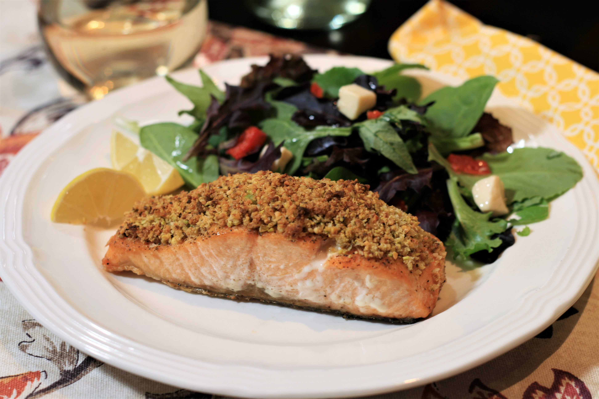

Pistachio Crusted Salmon

This delicious dish combines brings the seas to the trees. A bold approach to a traditonal dish contains
a crisp, refreshing elegance of the tradtional salmon in mix of the crunch of the hearty pistachio
Follow the recipe for a delicious time.
As well, please care for following the directions at
heart. For best results, cook with enthusasim.
Ingredients
- ¼ cup crushed pistachios
- 2 tablespoons panko bread crumbs
- 1 tablespoon grated Parmesan cheese
- 1 tablespoon butter, melted
- 4 (6 ounce) fillets salmon with skin, center cut
- salt and ground black pepper to taste
- 2 tablespoons olive oil
- 1 tablespoon Dijon mustard
- 4 lemon wedges
Instructions
- Preheat the oven to 375 degrees F (190 degrees C)
-
Combine pistachios, panko bread crumbs, Parmesan cheese, and butter in a small
bowl; stir with a fork until evenly combined
- Lightly season salmon fillets with salt and pepper on both sides
-
Heat olive oil in a large oven-safe skillet over medium heat. Sear salmon fillets, flesh-
sidedown, for 2 to 3 minutes. Turn heat off and flip salmon pieces over so skin side is
down. Brush tops of salmon evenly with Dijon mustard. Top with pistachio mixture,
pressing mixture down onto salmon.
-
Bake in the preheated oven until salmon flakes easily with a fork, 10 to 12 minutes.
Serve with lemon wedges.